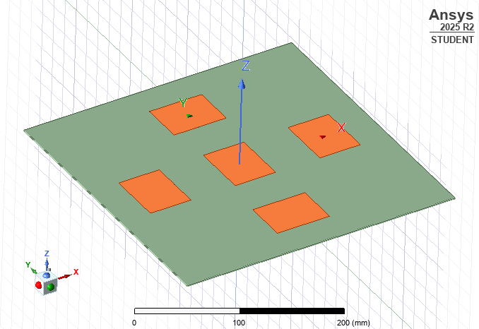
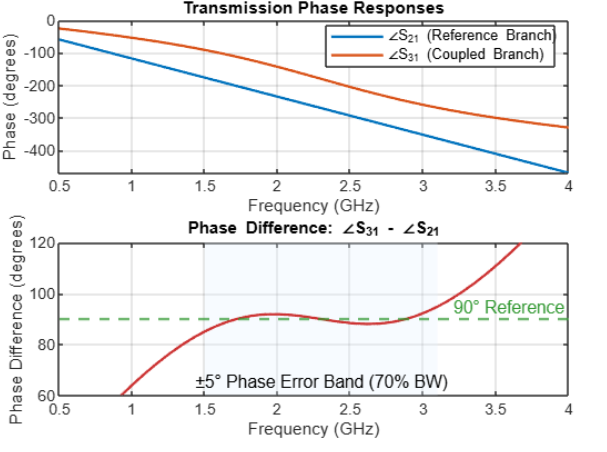

Projects
From CMOS receivers and radiometers to antennas, satellite ground stations and clean-room fabrication.
-
IC designOngoing
Wideband receiver front-end in CMOS
Designing the front-end of a wideband receiver in CMOS in the IC Design Lab at IIT Hyderabad, as an NPTEL pre-doctoral fellow working with Prof. Abhishek Kumar.
-
Radio astronomy
Water-vapour radiometer
Architectural design and bring-up of a water-vapour radiometer in the Astronomy & Astrophysics group: RF link-budget and thermal-noise analysis, and gain / noise-figure cascade modelling of the IF chain.
-

RF & antennasAnti-spoofing GNSS antenna array (CRPA)
B.E. major project: a 5-element (4 + 1) microstrip-patch Controlled Reception Pattern Antenna for GPS L1 (1.575 GHz) on a Rogers RO4350B-type substrate, modelled in Ansys HFSS with CST Studio Suite for validation. Part I established the array geometry and baseline simulation; Part II targets impedance-matching optimisation and null-steering algorithms in MATLAB.
With V. Bala Sai Datta and G. Preetham · guided by Dr. K. Suman
-
RF & antennas
Wide-band blade dipole for UAVs
A wide-band blade (bow-tie) dipole on a finite ground plane for the UHF / sub-GHz band used by UAVs and bird-like drones. In simulation: |S11| ≤ −10 dB from about 0.55 to 1.51 GHz (≈ 93% fractional bandwidth), VSWR < 2 across the band, and a −39.7 dB resonance at 0.73 GHz. Cross-checked with CST's frequency-domain solver.
-

Schiffman phase shifter (MATLAB model): phase difference within ±5° of 90° over about 70% bandwidth. RF & antennasCoupled-line couplers and Schiffman phase shifter
IEEE AP/MTT-S summer internship with IIT Kharagpur (remote): modelled a coupled-line directional coupler, a Schiffman phase shifter and a 180° hybrid coupler in MATLAB from coupled-line theory, and validated them against ideal circuit simulations in Keysight ADS, comparing insertion loss, return loss and phase error.
Mentor: Shrawan Kumar Patel, IIT Kharagpur
-
Radio & satellites
LoRa satellite ground station at 433 MHz
Designed, built and field-tested a quarter-wave ground-plane antenna, plus dipole, Yagi–Uda, quadrifilar-helix and turnstile antennas, for 433 MHz LoRa CubeSat downlinks, with a comparative link-margin analysis. The ground-plane antenna was better at receiving packets and received telemetry from slant ranges of about 3,100 km (4,000+ packets). The station runs VayuVani with my own Python decoders for LoRa telemetry and offline archiving.
Paper with K. Vasanth, V. Bala Sai Datta and K. Suman: Best Paper Award, IEEE SCEECS 2025 · VayuVani is an open-source platform by Chandra Tungathurthi
-
Radio & satellitesOngoing
SatNOGS ground station
An automated station on the open-source SatNOGS network, scheduling passes for CubeSats, AMSAT satellites and the ISS (ARISS), including time-critical end-of-life events. Hands-on site survey, antenna mounting, RF cabling and grounding, and noise-floor characterisation.
-
Radio & satellites
CubeSat antenna deployment: burn-wire mechanism
Designed and prototyped a compact, low-power burn-wire deployment subsystem for a 1U CubeSat with a four-stage release sequence. A custom relay-driven over-current PCB heats a resistive burn element through a nylon restraint, with a temperature-sensor safety interlock and microcontroller arming logic; shape-memory-alloy radiating arms self-erect.
Industrial project, CBIT · supervisor Dr. K. Vasanth
-
Radio & satellites
SDR transceivers and APRS ground nodes
Built SDR-based transceivers and portable, Raspberry Pi–driven APRS ground nodes for weather monitoring, designed to be deployed at remote field sites.
-
Fabrication
Clean-room nanofabrication
At IIT Hyderabad's SPARC NANO-X lab, fabricated nano-silicon waveguides, microfluidic devices and 50 µm gold interdigitated electrodes for 2-D-material gas sensors, using Heidelberg µPG 501 maskless lithography, DC magnetron sputtering and lift-off in a Class-1000 clean room, along with reactive-ion etching and plasma cleaning. Earlier, fabricated and characterised 2-D-material nano-device sensors at CREST, BITS Pilani Hyderabad.
-
Digital
Multi-core soft-processor cluster
A multi-core soft-processor cluster in Verilog with LFSR-based traffic generators and a round-robin arbiter FSM, targeted at FPGA synthesis in Xilinx Vivado. Ranked 20th of 250 (top 8%) in the AI/ML Powered FPGA Design & Simulation Hackathon at NIT Jamshedpur.
Other builds & simulations
- VHF wireless beacon for high-altitude balloon and CanSat missions (Arduino Nano + DRA818V), adapted for amateur-radio direction-finding.
- ADS-B receiver feeding live aircraft data to global aggregator networks.
- CMOS 180 nm process-to-device simulation in Silvaco TCAD, extracting Vt, Idsat, Ioff, subthreshold swing and DIBL.
- Schottky-diode forward I–V simulation with thermionic-emission, SRH, Auger and bandgap-narrowing models.
- Digital design in Verilog: 32-bit and carry-skip adders, barrel shifter, UART, BCD-to-7-segment decoder and clock divider.